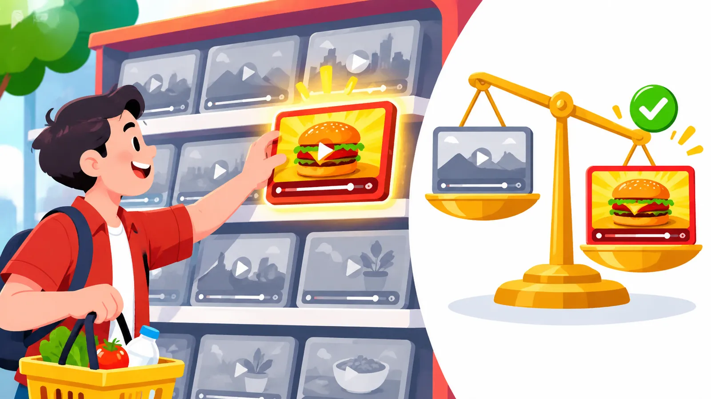

03Buổi 3 trên 8
Đóng gói video bằng tiêu đề và thumbnail
Giúp bạn viết tiêu đề, thiết kế thumbnail đúng khách hàng mục tiêu, thử nghiệm hai vòng và đóng gói lại video đang chạy tốt.
Mục tiêu buổi học
- Giải thích vì sao cách đóng gói video có thể tạo chênh lệch từ 10.000 lên 100.000 lượt xem.
- Thiết kế thumbnail theo đúng nhóm khách hàng mục tiêu và theo checklist 6 tiêu chí.
- Áp dụng quy trình A/B testing thumbnail hai vòng, đồng thời thử nghiệm cả tiêu đề.
- Chọn ra video đang có hiệu suất tốt để đóng gói lại và khai thác thêm lượt xem.
Tóm tắt 30 giây
Tiêu đề và thumbnail quyết định người xem có nhấp vào video hay không, nên cùng một nội dung có thể đạt 10.000 hoặc 100.000 lượt xem tùy cách đóng gói. Mục tiêu là thu hút đúng người xem và giữ đúng lời hứa ngay trong 30 giây đầu, không phải chạy theo lượt nhấp. Thumbnail cần thiết kế riêng cho khách hàng mục tiêu, được thử nghiệm theo hai vòng và tối ưu sớm dựa trên dữ liệu. Những video đang chạy tốt hơn mức trung bình là nơi đáng đóng gói lại nhất.

1. Cách đóng gói có thể quyết định thành công của một video
Packaging là cách bạn "gói" một video trước khi đưa tới người xem, giống bao bì của một sản phẩm trên kệ hàng. Phần bao bì này gồm hai yếu tố chính:
- Tiêu đề (title).
- Ảnh đại diện video (thumbnail).
Cùng một nội dung y hệt, nhưng video được đóng gói tốt hơn có thể đạt 100.000 lượt xem thay vì chỉ 10.000 lượt xem.
Dù vậy, đừng chỉ tối ưu để có thật nhiều lượt nhấp. Hãy tối ưu để thu hút đúng người xem. Tỷ lệ nhấp, thường gọi là CTR, cho biết bao nhiêu phần trăm người thấy video đã bấm vào xem. Có những video CTR thấp hơn video khác, nhưng người đã nhấp vào lại xem lâu hơn. Lý do rất đơn giản: nội dung thực sự đáp ứng đúng điều mà tiêu đề và thumbnail đã hứa.
Ghi nhớTrước khi xuất bản bất kỳ video nào, hãy tự hỏi: 30 giây đầu tiên có thực sự mang lại điều mà tiêu đề và thumbnail đã hứa không?
Đừng để người xem cảm thấy bị đánh lừa sau khi nhấp vào video. Một người thực sự hài lòng với video trước sẽ dễ nhấp vào video tiếp theo của bạn hơn. Đó mới là điều cần tập trung xây dựng lâu dài.
2. Thumbnail phải được thiết kế riêng cho khách hàng mục tiêu
Nhiều người thiết kế thumbnail chỉ quen một phong cách duy nhất và áp dụng nó cho mọi kênh. Cách làm này không phù hợp nếu mục tiêu của bạn là tạo doanh thu. Thumbnail cần được thiết kế dựa trên chính nhóm khách hàng mà bạn muốn thu hút.
Ví dụMột doanh nghiệp có doanh thu 5 triệu USD/tháng bán sản phẩm cho phụ nữ trên 50 tuổi. Thumbnail của họ có thể dùng thông điệp rất cụ thể như "Giảm mỡ vùng dưới cánh tay". Đây là cách tiếp cận hợp với nhóm khách hàng đó. Nếu áp nguyên phong cách này cho phụ nữ 20 tuổi, hiệu quả có thể hoàn toàn khác.
Tương tự, thumbnail mang phong cách hoạt hình, màu sắc quá trẻ trung có thể không hợp với nhóm khách hàng lớn tuổi.
3. Checklist thiết kế thumbnail gồm 6 tiêu chí
Khi đánh giá hoặc thiết kế lại thumbnail, hãy kiểm tra lần lượt các yếu tố sau:
- Tạo sự tò mò để người xem muốn khám phá thêm.
- Có sự liên kết với phần mở đầu video.
- Tạo yếu tố mới lạ, có thể thông qua một phong cách trình bày khác biệt.
- Dễ hiểu ngay khi nhìn lướt qua, tối đa khoảng 3 yếu tố chính.
- Bổ sung thông tin cho tiêu đề, không lặp lại nguyên văn tiêu đề.
- Tối ưu bố cục, màu sắc và độ tương phản giữa các thành phần.
Lưu ýThumbnail và tiêu đề nên làm hai việc khác nhau. Nếu thumbnail chỉ chép lại chữ trong tiêu đề, bạn đã lãng phí một nửa không gian để nói với người xem.
4. Năm yếu tố tạo khác biệt giữa video 10.000 và 100.000 lượt xem
Khoảng cách giữa một video bình thường và một video bứt phá thường nằm ở các yếu tố sau:
| Yếu tố | Ý nghĩa |
|---|---|
| Tính liên quan | Người xem nhìn vào và cảm thấy video này thực sự dành cho mình. |
| Giá trị rõ ràng | Họ hiểu ngay mình sẽ nhận được điều gì sau khi xem. |
| Sức hấp dẫn của chủ đề | Chủ đề có đủ thú vị không, và có thể mở rộng góc tiếp cận để thu hút một nhóm người lớn hơn không. |
| Tiêu đề dễ hiểu | Người xem không phải mất thời gian đoán video đang nói về điều gì. |
| Ý tưởng từ những trường hợp vượt trội | Quan sát các định dạng đã chứng minh hiệu quả ở lĩnh vực khác, rồi ứng dụng vào vấn đề của khách hàng mục tiêu. |
5. Một video vượt trội không phải lúc nào cũng nhờ may mắn
Giả sử một video đạt lượng xem gấp 10 lần mức trung bình của kênh. Đừng vội cho rằng đó chỉ là may mắn. Có thể video thành công nhờ 4 yếu tố, nhưng khi làm bạn chỉ chủ động kiểm soát được một yếu tố, còn 3 yếu tố kia tình cờ cũng phù hợp.
Việc cần làm là đặt những video vượt trội cạnh nhau và tìm điểm chung. Yếu tố nào lặp lại ở nhiều video thành công thì đó chính là mô hình bạn cần tìm. Phần còn lại có thể chỉ là ngẫu nhiên.
Ghi nhớMột video thắng lớn là một gợi ý, nhiều video thắng lớn có chung một yếu tố mới là một quy luật.
6. A/B testing thumbnail theo hai vòng
A/B testing là cách cho nhiều phiên bản cùng chạy để dữ liệu cho biết phiên bản nào hiệu quả hơn, thay vì đoán theo cảm tính. Quá trình thử nghiệm thumbnail nên chia thành hai vòng:
| Vòng | Cách làm | Mục tiêu |
|---|---|---|
| Vòng 1 | Thử nghiệm 3 thumbnail hoàn toàn khác nhau. | Tìm ra phong cách hoặc hướng thiết kế hiệu quả nhất. |
| Vòng 2 | Tạo thêm 2 phiên bản biến thể từ thumbnail chiến thắng. | Tinh chỉnh và cải thiện kết quả. |
Nói gọn, vòng 1 giúp tìm ra phương án tốt nhất, vòng 2 giúp tối ưu phương án đó.
Qua hơn 200 video, cách thử nghiệm này đã đóng góp hơn 20 triệu lượt xem cho các chiến dịch áp dụng nó. Có một kênh còn tăng thêm 1 triệu lượt xem chỉ trong 14 ngày nhờ thử nghiệm đồng thời 3 phiên bản thumbnail.
Đừng chỉ thử nghiệm thumbnail, hãy thử nghiệm cả tiêu đề. Đôi khi một tiêu đề không hoàn toàn bám sát cách bạn định triển khai nội dung lại hiệu quả hơn rất nhiều, vì góc tiếp cận của nó hấp dẫn hơn. Khi phát hiện một góc tiếp cận như vậy, hãy tiếp tục sản xuất những video mới xoay quanh chủ đề đó.
7. Đóng gói lại những video đã hoạt động tốt
Trong phần lớn trường hợp, đóng gói lại video không nhằm cứu một video thất bại. Mục tiêu là khai thác thêm tiềm năng của những video vốn đã có hiệu suất tốt hơn mức trung bình.
Hãy tìm những video có tốc độ tăng lượt xem theo giờ cao hơn bình thường. Sau đó:
- Thiết kế một thumbnail mới.
- Viết lại tiêu đề.
- Thử nghiệm phiên bản cũ với phiên bản mới.
Ví dụRian Doris từng có một video đạt 209.000 lượt xem. Sau khi thay đổi cách đóng gói, video đó tăng lên 1,5 triệu lượt xem. Một video khác tăng từ 50.000 lên 1,9 triệu lượt xem.
Khi thiết kế thumbnail tại Acquisition.com, số phương án cho mỗi video từng được tăng từ 3 lên 12 thumbnail. Mục đích không phải là trở thành thiên tài thiết kế, mà chỉ đơn giản là có nhiều phương án để thử nghiệm hơn.
8. Tối ưu packaging phải làm nhanh
Chiến lược doanh thu có thể cần chờ 3 tới 6 tháng mới thấy kết quả, nhưng điều đó không có nghĩa bạn phải chờ ngần ấy thời gian mới thay thumbnail hoặc tiêu đề. Packaging cần được tối ưu dựa trên dữ liệu lượt xem và có thể điều chỉnh sớm hơn rất nhiều.
Lưu ýĐừng nhầm sự kiên nhẫn với chiến lược dài hạn thành sự chậm trễ khi tối ưu tiêu đề và thumbnail. Số liệu lượt xem đã cho tín hiệu thì nên hành động ngay.
Checklist áp dụng
Tiến độ được lưu trên trình duyệt của bạn.
Bài tập thực hành
- Kiểm tra lời hứa của 5 video gần nhất. - Đầu vào: 5 video mới nhất trên kênh, kèm tiêu đề và thumbnail của từng video. - Cách làm: xem 30 giây đầu của mỗi video, so với điều tiêu đề và thumbnail đã hứa. - Đầu ra: bảng 5 dòng ghi rõ video nào đáp ứng đúng lời hứa, video nào chưa và chưa ở điểm nào.
- Đóng gói lại một video đang chạy tốt. - Đầu vào: dữ liệu lượt xem theo giờ của các video trên kênh. - Cách làm: tìm 3 video có tốc độ tăng lượt xem theo giờ tốt nhất, chọn một video, thiết kế thumbnail mới, viết lại tiêu đề, rồi thử nghiệm bản cũ với bản mới. - Đầu ra: danh sách 3 video kèm số liệu, cùng một video đã được đóng gói lại và đang chạy thử nghiệm.
- Thử nghiệm thumbnail hai vòng cho video tiếp theo. - Đầu vào: video sắp xuất bản. - Cách làm: vòng 1 thử 3 thumbnail hoàn toàn khác nhau; khi có thumbnail chiến thắng, vòng 2 tạo thêm 2 biến thể từ thumbnail đó. - Đầu ra: thumbnail chiến thắng sau vòng 1, phiên bản tốt nhất sau vòng 2 và ghi chú hướng thiết kế nào hiệu quả.
Câu hỏi tự kiểm tra
Packaging của một video gồm những yếu tố chính nào?
Xem gợi ý
Tiêu đề (title) và ảnh đại diện video (thumbnail).
Vì sao một video có CTR thấp hơn vẫn có thể tốt hơn?
Xem gợi ý
Vì người đã nhấp vào xem lâu hơn, do nội dung đáp ứng đúng điều tiêu đề và thumbnail đã hứa, nên thu hút được đúng người xem.
Tại sao không nên dùng một phong cách thumbnail cho mọi kênh?
Xem gợi ý
Thumbnail phải hợp với khách hàng mục tiêu; thông điệp hợp với phụ nữ trên 50 tuổi có thể kém hiệu quả với phụ nữ 20 tuổi, phong cách hoạt hình trẻ trung có thể không hợp với người lớn tuổi.
Hai vòng A/B testing thumbnail khác nhau ở điểm nào?
Xem gợi ý
Vòng 1 thử 3 thumbnail hoàn toàn khác nhau để tìm hướng tốt nhất; vòng 2 tạo 2 biến thể từ thumbnail thắng để tinh chỉnh.
Khi một video đạt lượng xem gấp 10 lần mức trung bình, bạn nên làm gì?
Xem gợi ý
Không vội cho là may mắn; đặt các video vượt trội cạnh nhau, tìm yếu tố lặp lại để rút ra mô hình, coi phần còn lại có thể là ngẫu nhiên.